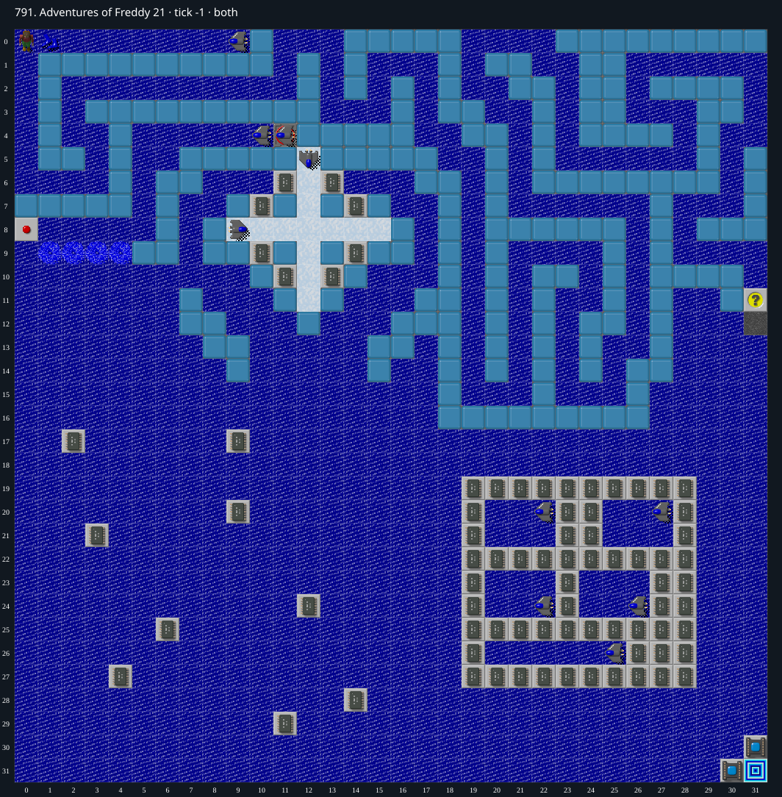

Jacques · Original Tile World MS
791. Adventures of Freddy 21
Impossibility argumentTwo mandatory chip alcoves require a perpendicular turn on plain ice; the ice axis cannot change at their only approach.
77 chips required · 301 second time limit
Why completion is impossible
- Choose the first visit to either chip alcove
- Its three other neighbors are permanent real blue walls, so the visit must leave (12,10) horizontally
- Before this first alcove visit, (12,10) can only be entered vertically from plain ice (12,9) or (12,11), giving a north/south slipping direction
- Player input is discarded while slipping on ice
- A blocked forced move on plain ice reverses its direction by 180 degrees; it does not permit a perpendicular turn, even when both directions are blocked
- Thus the direction axis at (12,10) remains north/south and neither alcove can be entered first, a contradiction
- No skates, ice corners, teleports or blocks occur on either map plane
- Gliders (including the cloner output) do not alter ice or permanent walls; contact cannot provide a surviving perpendicular turn
- All77 chips are needed, and both neighbors of the sole corner exit are sockets, so these two unreachable chips prevent winning.
Inspect both layers
The main map shows the initial runtime state. Switch to the buried layer to inspect hidden terrain and items. Hover coordinates are also available in the downloadable SVG.


Recorded checks and attempts
- structural/native-source proof: Review-791.ts checks all77 chips required, alcove walls, plain-ice approach and absence of skates/corners/blocks/teleports. Native choosechipmove, icewallturn and floormovements_of_chip establish input discard and same-axis reversal.